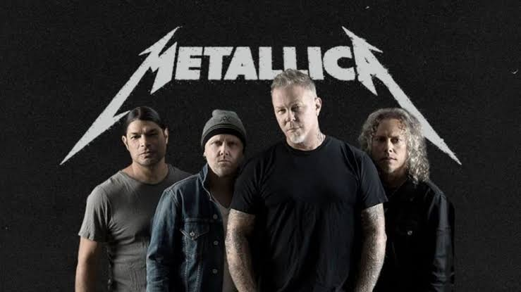

Metallica es una banda de heavy metal estadounidense formada en Los Ángeles, California en 1981. La formación actual de la banda está compuesta por James Hetfield (voz y guitarra rítmica), Lars Ulrich (batería), Kirk Hammett (guitarra líder) y Robert Trujillo (bajo).
La historia de Metallica comenzó en 1981 cuando el joven baterista Lars Ulrich se trasladó con su familia a la ciudad de Los Ángeles en el estado de California. En esa época, la banda se formó con James Hetfield, Lars Ulrich, Cliff Burton y Dave Mustaine en sus filas. Posteriormente, Kirk Hammett se unió como reemplazo de Dave Mustaine, convirtiéndose en miembro fijo de la banda hasta la fecha.
Por lo tanto, los integrantes originales de Metallica fueron James Hetfield, Lars Ulrich, Cliff Burton y Dave Mustaine. Sin embargo, Kirk Hammett se unió a la banda como reemplazo de Dave Mustaine y se convirtió en miembro fijo, completando la formación clásica de la banda.
En resumen, la formación original de Metallica incluía a James Hetfield, Lars Ulrich, Cliff Burton y Dave Mustaine, con Kirk Hammett uniéndose posteriormente como reemplazo de Dave Mustaine y convirtiéndose en miembro fijo de la banda.
Metallica es conocida por sus canciones de heavy metal con letras que tratan sobre temas como la muerte, la guerra, la política y la justicia social. La banda ha lanzado diez álbumes de estudio, cuatro álbumes en vivo, cinco álbumes de video, dos álbumes recopilatorios y 37 sencillos.
¡No te pierdas la oportunidad de presenciar un concierto único de Metallica en tu ciudad! Disfruta de una noche llena de energía y potencia con una de las bandas más icónicas del heavy metal.
Fecha: 28 de mayo de 2024
Lugar: Inacap del Centro
Entradas limitadas. ¡Reserva la tuya ahora! Con Claudio
Metallica ha ganado nueve premios Grammy y ha sido nominada a 23 en total. La banda también ha sido incluida en el Salón de la Fama del Rock and Roll en 2009.